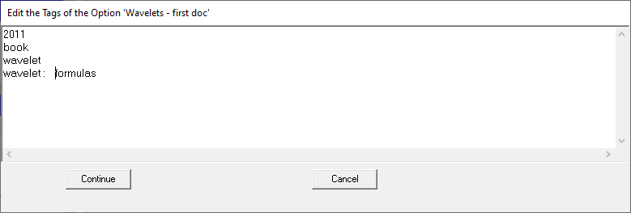

Change the Tags of an Option
Any Option may have none, one or more tags. To change them you can use the floating menu option "Change Tags".
This menu option presents the following form, where you may edit the text corresponding to the desired tags. Norms for the conversion follow below. Next figures show an example:

Final result:
Norms to convert free text in valid tags:
- A Tag is any piece of text delimited by comma characters (",") or carrer returns.
- It may contain blanks. I.e. "active stall".
- Tag may be hierarchical (nested). To specify a hierarchical tag simply separate the levels with the ":" character. I.e. , the expression "wind turbine: active stall" creates two tags:
"wind turbine", at level 1.
"active stall", at level 1, under tag "wind turbine".
Note that in the example above figure, the blank characters around the "wavelet" and "formulas" has been removed.
The Tag Tree View presents all off them, with order [a-z]:
Deletion of Tags
A Tag is deleted only if there is no Option associated with it.
Editing Tags in the "Combined editor for Groups and Options"
Tags can be edited in the Combined editor for Groups and Options.